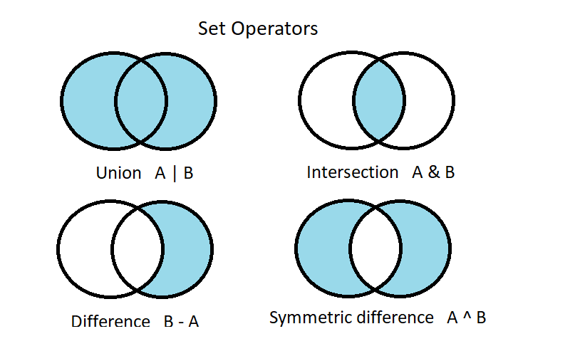

Set Operators with Groovy
Author: Paul King
Published: 2023-11-14 03:22PM
Donald Raab posted an article about set operators using Java collections and Eclipse Collections. That post focuses on the union, intersection and difference operators. We’ll add in symmetric difference since Groovy supports operator overloading for that operator also.
First, a quick refresh about the operators for two sets A and B:

We’ll use the same emoji sets from Donald’s post:
Set OCT = ["ğŸ", "ğŸƒ", "ğŸƒ", "🥧", "🍫", "🌝", "👻", "🌽", "ğŸ", "🪵", "☕️"]
Set NOV = ["🍂", "🍁", "🥧", "🦃", "🌽", "🍎", "🪵", "☕️"]
Set DEC = ["🥧", "🦃", "⛄️", "ğŸ", "🌰", "🛷", "🪵", "🎄", "☕️"]Groovy lets you write the same code as in Donald’s post but also offers operator overloading for these operators as follows:
assert (OCT & NOV & DEC) == ["🪵", "🥧", "ğŸ", "☕️"] as Set
assert (OCT | NOV | DEC) == ["🪵", "🦃", "🌰", "🛷", "🍎", "🎄",
"🍫", "🌝", "☕️", "🥧", "⛄️", "🍁",
"🍂", "🍃", "👻", "🌽", "🎃"] as Set
assert (OCT - NOV - DEC) == ["🍫", "🌝", "🍃", "👻", "🎃"] as Set
assert (NOV - OCT - DEC) == ["🍂"] as Set
assert (DEC - OCT - NOV) == ["🎄", "🌰", "⛄️", "🛷"] as Set
assert (OCT ^ NOV ^ DEC) == ['⛄️', '🌰', '🛷', '🎄', '🍃', '🎃', '🍫', '🌝',
'👻', '🍂', '🥧', '🍎', '🪵', '☕️'] as Set
assert (NOV ^ OCT ^ DEC) == ['🍂', '🍃', '🎃', '🍫', '🌝', '👻', '🥧', '⛄️',
'ğŸ', '🌰', '🛷', '🪵', '🎄', '☕️'] as SetThis code is using standard mutable Java collections,
but we could use the normal Set.of(…) form and work with immutable sets
if that was our preference.
Also, since the Eclipse Collections Set implementations implement
the standard Java Set interface, these operator overloading shorthands
also work when using Eclipse Collections. We simply use
Sets.immutable.of(…) in our set definitions.
What’s more, since Groovy operator overloading is extensible, you can have similar shorthand notation for your own domain objects also. Enjoy!
This example used an alpha version of Groovy 5. Groovy 5 adds a little bit
of extra syntactic sugar when using sets. Earlier versions of Groovy
have union and intersect methods for sets.